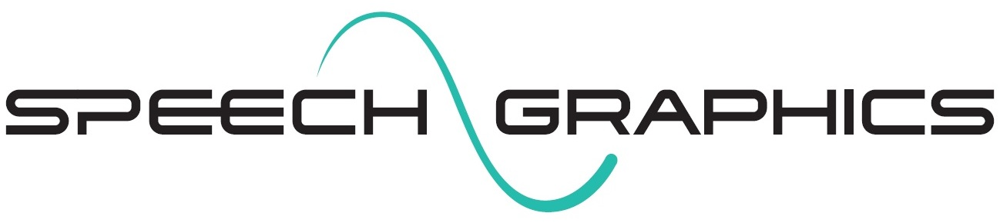

Profile
An experienced programmer with a passion for real-time computer graphics, games development, artificial intelligence and mathematics.
Career History
-
Aiva Technologies
Freelance Deep Learning Researcher
Apr 2018 – Jun 2018
Research, development and implementation of new concepts of Generative Models in the symbolic musical domain.
-

Speech Graphics
Machine Learning Research Engineer / Software Engineer
Aug 2016 – Feb 2018
At Speech Graphics I have applied Deep Learning to speech processing and real–time animation in a research and development setting. The position has provided an opporunity to apply and strengthen my skills in this area.
- Deep Learning, Torch/Lua, Theano, Tensorflow
- Speech enhancement, source separation, noise removal. RNNs, LSTMs and GRUs. Convnets.
- Optimising neural networks via weight pruning
- Generative models of raw audio, time-series modelling
- Speech processing, FFT/DCT, signal processing, Mel spectrogram, MFCCs, raw audio convnets, CTC phonetic segmentation
- C++ application programming, Maya Plugin development
- 3rd party engine integration, multithreaded audio. Unreal, Unity3D
- Mobile application development, adaptive performance tuning
- Construction, administration and maintenance of a dedicated GPU training machine
-
Rockstar Games
Camera Programmer
Aug 2014 – Feb 2016
I learned a great deal during my time at Rockstar North, applied and sharpened many skills, tackled a stream of interesting intellectual problems and gained valuable insight into how such a large international development team operates.
Achievements unlocked:
- Added EyeFinity support for the PC release of GTAV
- Added bespoke cameras for the Valkyrie, Insurgent and Technical vehicle turrets
- Fixed numerous and varied bugs across multiple projects
- Worked on camera features of the Rockstar Editor, also fixed numerous flaws regarding framing, collision and time warping code
- Worked closely with the AI, Gameplay, Physics and Graphics teams to solve cross-discipline technical challenges
- Investigated computational cinematography, screen-space composition, camera path finding and intelligent camera planning
- Worked with producers, designers and camera arists to apply their creative input
- Gained experience with cross-platform development and debugging. On PC, PS3, PS4, XBox 360 and XBox One
-
Musemantik
Software Developer
2013 – 2014
I worked on the MusicFlow web application, a web based audio editing suite for dynamic compositions. For this project we used CoffeScript, Backbone.js, Ruby on Rails, Capybara, Casper.js and many other technologies. The role saw me as part of a two-man team, working with Ronen Barzel. Working in such a small team meant a lot of room for autonomy and creativity. In addition to the composer tools I created a user-facing HTML5 video editor for arranging and previewing dynamic scores with video.
- Automated musical arrangement
- Web application development
- Ruby on Rails
- JavaScript
- BackBone
- CoffeeScript
- Automated testing
- HTML5 video
-
Winterwell Associates
Programmer / Frontend Engineer
2011 – 2012

I worked on improving the frontend to the Soda.sh social media monitoring web application, moving away from server-side rendering to frontend templates. The role involved aesthetic and UX design. I also wrote a Christmas card to send to clients and friends of the company, a snowflake grown via cellular automata on the GPU (WebGL).
- JavaScript/CSS/XHTML
- User experience and interface design
-
RaceBets.com
Web Developer
2011 – 2011
I laid the foundations for a full rebuild of their website. The aim was to reduce page load times and provide real-time responsiveness to their customers, moving to an entirely template driven frontend.
- Web application development
- Frontend engineering
-
Blonde Digital
Web Developer
2010 – 2011
This role involved maintenance of multiple client websites, working with various different languages and CMS systems.
-
Whitespace
Digital Media Developer
2008 – 2010
At Whitespace I had a real taste of working in an energetic agency environment – teaming up with designers, developers, account managers and the directors to achieve our goals and deliver to our clients. Some of the projects I worked on are listed at http://iamawebsite.info/portfolio/.
- Working with the team on more than 100 different projects
- Building client-specific backend interfaces for data management
- Sharing knowledge and standards, teaching new members of the team
- Creating reusable and modular solutions
- Vastly improving my back-end and front-end skills
-
Tsuko
Freelance Web Developer
2007 – 2008
I worked on the Dundas Castle and ICAS (Institute of Chartered Accountants) websites. As my first professional role this was a good chance to gain insight into the operation of a creative agency.
Skills
-
Technologies
- Game development
- Deep learning
- Computer vision
- Electronics
- Mathematics
- Neuroinformatics
- System administration
- Web development
- C
- C++
- Obective-C
- Assembly language
- Python
- Ruby
- Lua
- Prolog
- Haskell
- Bash
- Java
- Javascript
- OpenCL
- OpenGL
- Direct3D
- WebGL
- GLSL
- Git
- MySQL/PostgreSQL
- Websocket
- HTML5/CSS3
- LLVM
- ALSA/Pulseaudio
- NodeJS
- Matlab
- Microsoft Visual Studio
- GCC/Clang
- RabbitMQ
- Redis
- Unity3D
- UnrealEngine4
- Oculus
-
Programming
I began when I was very young, on a BBC Micro at around 5 years old. Programming has always been a passion of mine, it filled my childhood with immense joy, creativity and excitement at the seemingly endless possibilities. There has always been a desire to create virtual worlds, to create experiences that would touch the lives of others.
-
Mathematics
I've always gained enjoyment from solving mathematical problems and exploring new topics, among which are Analytical Geometry, Timeseries Analysis, Numerical Methods, Probability Theory and Statistics, Game Theory, Abstract Algebra and Topology. To me it is the mother of all sciences, a powerful language and tool.
-
Deep Learning
I've a huge passion for Artificial Neural Networks applied to computer vision and timeseries modelling. I've studied the work of Geoffrey Hinton and Yann Lecunn (among others) and have applied LSTMs and CNN in production applications. I make sure to keep up to date with the literature and am always learning.
Projects
-
SampleRNN_torch
An unconditional neural generative model of raw audio implemented in the Torch framework, capable of modelling complex audio at the sample level. I've many future research plans involving conditional variants of this model applied in a variety of settings.
-
VisionMachine
An LLVM powered, gesture driven, flow-based programming compiler and development environment. This project aims to circumvent the limitations of traditional compilers and programming languages, balancing creativity with optimal machine code generation, and the ability to hot-patch changes live several orders of magnitude faster than other solutions (Edit and Continue, Indefiant’s Recode). Currently in a prototypical phase future project aims include GPU acceleration via technologies such as KernelGen and Polly. With time this could be a strong competitor against products such as MaxMSP, PureData and LabView by supporting heterogeneous computing architectures transparently.
-
Near-Eye Lightfield Display
Recreating the VR glasses as described in Douglas Lanman's paper, Near-Eye Light Field Displays. This project is a great opportunity to get hands on experience with microlenses and microdisplays, solid state gyroscope and lightfield rendering. I have implemented rasterisation and path tracing lightfield renderers, using a combination of OpenGL and OpenCL. The next phase is to house the glasses and mount the solid-state motion tracker. Studying the paper was a good learning experience in the optics and mathematics involved.
-
Bitcoin Payment Processing System
With a custom fork of the bitcoin-core client, adding ZeroMQ support, RabbitMQ, PostgreSQL, Node.js and custom frontend JavaScript users can deposit and withdraw funds via QR code - receiving realtime notifications via WebSocket. The IP for this project is held by my company CoinTech Ltd.
-
F***ing Magnets Projector-Depthcam Calibration Software
Performs pose estimation between a depth camera and projector, creating an RGBD video feed as seen from the projector-eye-view. This has applications in interactive installations.
Education
-
School of Informatics – University of Edinburgh
2003 – 2007
MEng Software Engineering with Artificial Intelligence
-
George Heriot’s High School
1996 – 2003
SQA Awarded Highers:
- Mathematics (A)
- Computing (A)
- Physics (A)
- English (A)
- Chemistry (B)